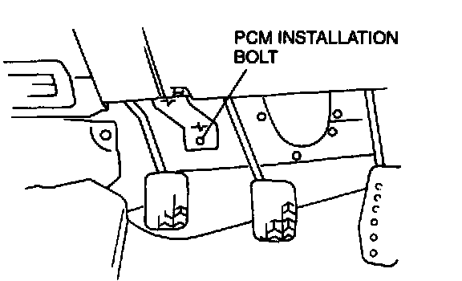
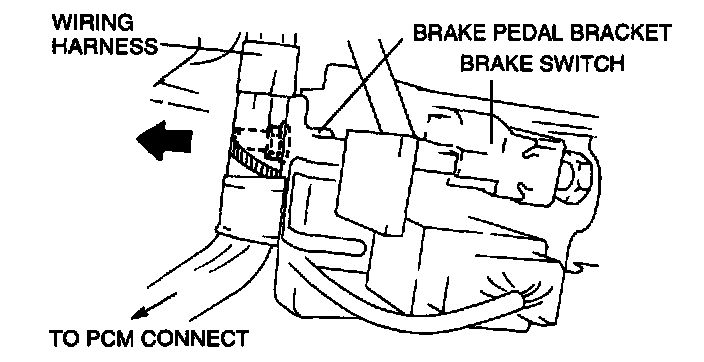
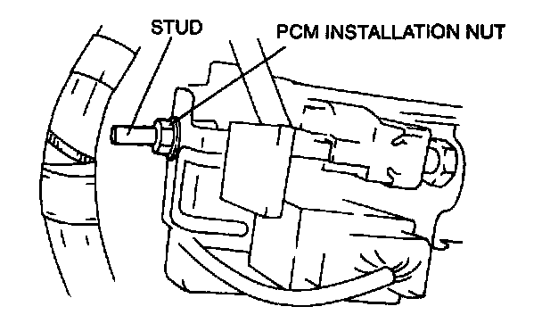

Engine Control Module: Service and Repair
1. Disconnect the negative battery cable.2. Disconnect the connector from the PCM installed on the upper part of the brake pedal.
3. Remove the bolt and nut holding the PCM.

NOTE:
- When removing the nut.

1. Push the harness (PCM harness) installed to the brake pedal bracket in the opposite direction of the brake pedal bracket.
2. While pushing the harness, push the stay until it comes apart from the stud with the PCM installation nut.

3. Remove the PCM installation nut.
4. Install in the reverse order of removal.
Tightening torque bolt, nut: 7.9-10.7 Nm (80-110 kg.cm, 70-95.4 in.lb)